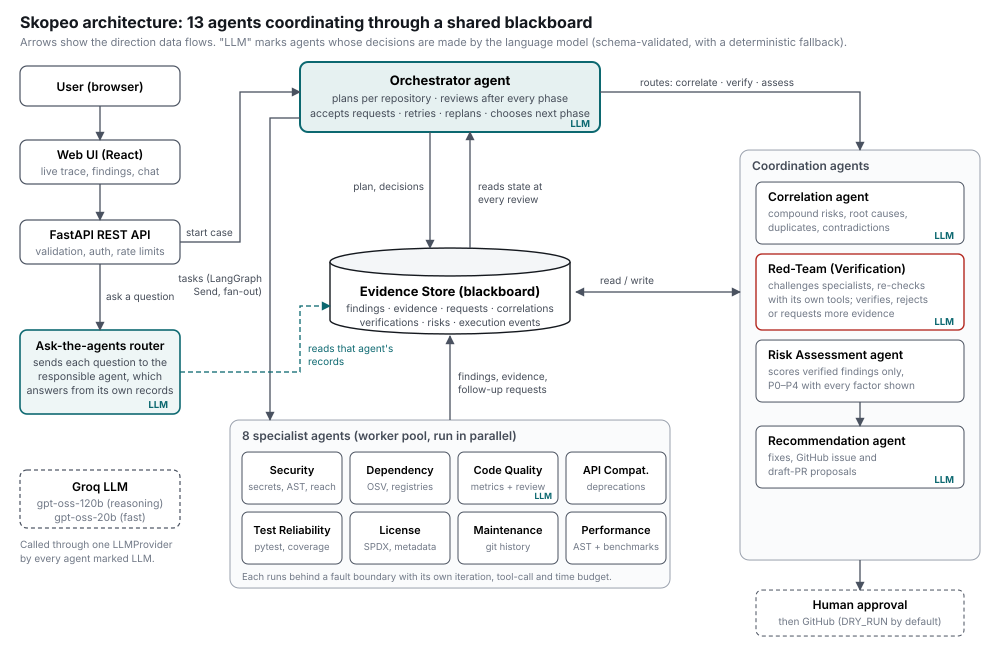
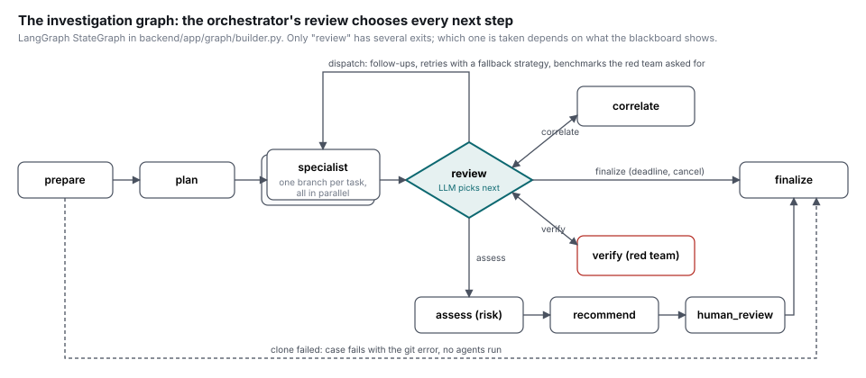
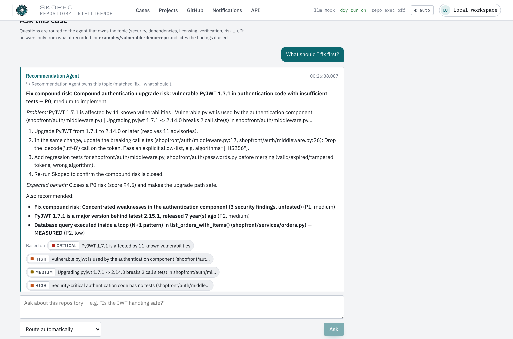
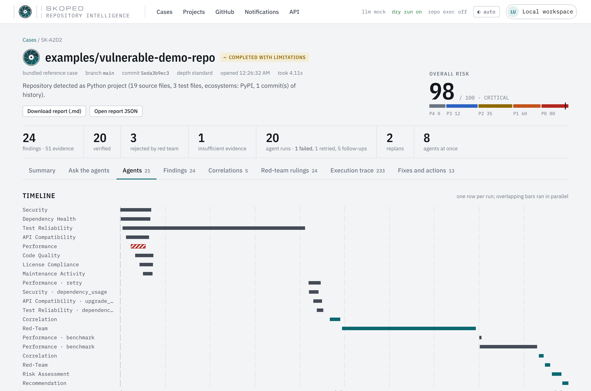
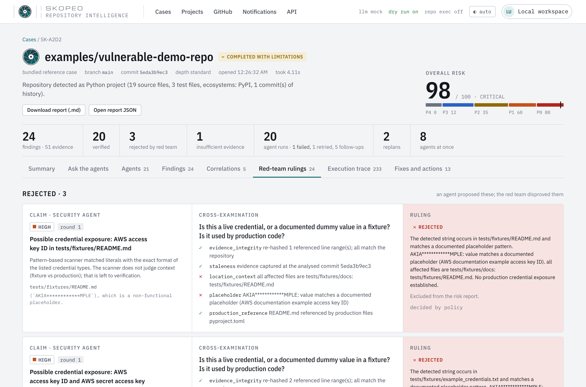
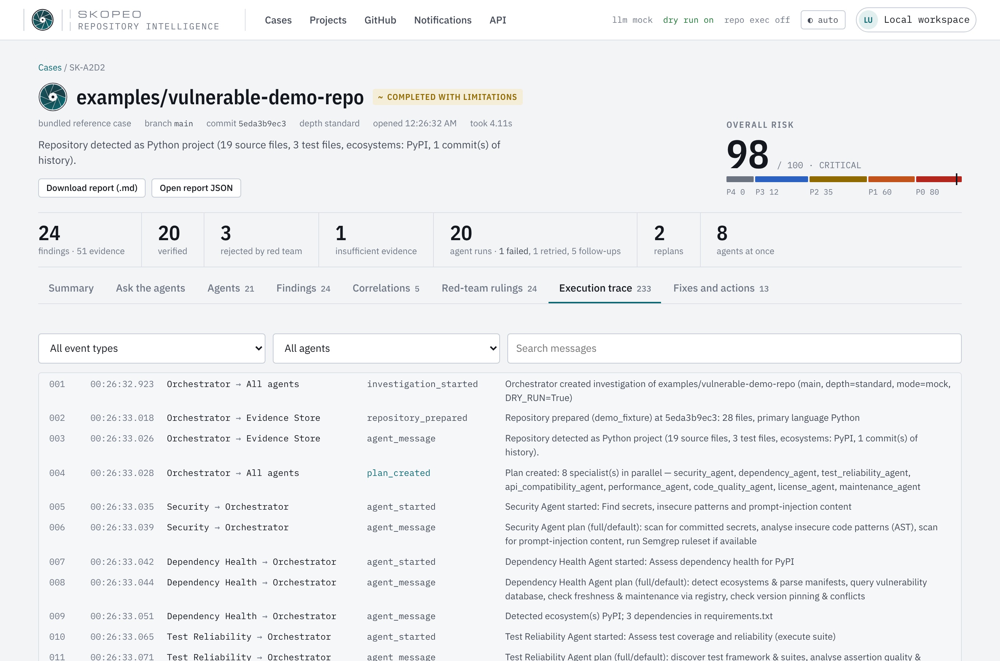

Thirteen agents investigate a GitHub repository together: an orchestrator plans and re-plans, eight specialists gather evidence in parallel, and four coordination agents correlate, challenge, score and fix. They communicate through a shared Evidence Store (blackboard) and a persisted message log, and every decision is visible in the execution trace.

How a request flows. The user submits a GitHub repository (or picks one after signing in with GitHub). The API validates it and opens a case. The Orchestrator profiles the repository and plans which specialists to run and why (it records a reason for every agent selected or skipped). LangGraph fans the tasks out with Send, so the specialists run in parallel; each posts findings, the evidence behind them, and requests for follow-up work to the Evidence Store. After every phase the orchestrator reviews the blackboard and decides the next step: dispatch more work (follow-ups, retries, benchmarks), correlate, verify, assess or finish. The Correlation agent links findings across specialists; the Red-Team agent challenges each finding and either verifies it, rejects it, or sends it back for more evidence; the Risk agent scores only verified findings; the Recommendation agent writes fixes and proposes GitHub actions that wait for human approval. After the case, the Ask-the-agents router sends each user question to the agent that owns the topic.
| Agent | Responsibility | Tools it uses | Decisions it makes |
|---|---|---|---|
| Orchestrator | Profiles the repository, plans per repository, reviews after every phase, accepts or declines other agents' requests, schedules follow-ups and retries, re-plans, routes the graph, enforces budgets and the deadline. | Repository profile, blackboard queries, budgets | orchestrator.plan, orchestrator.review (LLM, reasoning model) |
| Security | Committed secrets, insecure code patterns, prompt-injection text, whether vulnerable packages are used and reachable. | Secret patterns, Python AST, import graph; Semgrep and Dependabot when available | Own plan; extends it on discoveries |
| Dependency Health | Vulnerabilities, freshness, abandonment, pinning and conflicts (PyPI, npm, Go, crates.io, Maven). | Manifest parsers, OSV.dev, PyPI/npm registries (offline snapshot for demos) | Raises impact-analysis requests |
| Code Quality | Complexity, nesting, size, swallowed exceptions, duplication, data-access maintainability. | AST metrics | code_quality.review (LLM) of the most complex functions |
| API Compatibility | Public API, deprecations still in use, breaking changes in history, whether a dependency upgrade is drop-in. | AST, git history, migration rules with changelog links | Upgrade-compatibility verdicts |
| Test Reliability | Test discovery, assertion quality, flakiness signals, which code is untested, real test runs. | pytest + coverage.py (sandboxed), AST | Coverage mapping on request |
| License Compliance | Project license vs metadata, copyleft files, dependency license compatibility. | License fingerprints, SPDX headers, registry metadata | — |
| Maintenance Activity | Commit cadence, contributor concentration (bus factor), stale modules, releases, PR activity. | git log, GitHub REST (with a token) | — |
| Performance | Static suspects (N+1 queries, network calls in loops) versus measured problems. | AST, benchmark runner | Runs benchmarks the red team asks for |
| Correlation | Builds a typed link graph across all findings: compound risk, shared root cause, causal chain, dependency link, duplicate, contradiction. Sends contradictions to the red team. | Link graph over the blackboard | correlation.assess (LLM) accepts or rejects each candidate |
| Red-Team (Verification) | Distrusts the other agents. Re-hashes cited lines, rebuilds the import graph, re-runs failing tests, checks placeholders, compares severity with advisory data, demands measurement for performance claims. | Its own copies of the tools above | verification.judge (LLM, reasoning model): verified / rejected / needs more evidence |
| Risk Assessment | Scores verified findings and compound risks P0–P4 with every factor stored: severity × confidence × impact × exploitability × correlation multiplier. | Transparent formula | Deterministic by design (auditable) |
| Recommendation | Turns risks into fixes, GitHub issues and draft-PR proposals that need human approval. | Templates, approval gate | recommendation.write (LLM) |
| Ask-the-agents router | Routes each user question to the agent that owns the topic; that agent answers only from its own findings, evidence and code excerpts, and cites them. | Keyword scoring, blackboard, cloned repository | chat_route (LLM, fast) and chat_answer (LLM, reasoning) |
Code: backend/app/agents/ (one module per agent; registry.py is the only place names map to classes), backend/app/chat/service.py (router). Full specifications: docs/agent-specifications.md.
Named pattern: hierarchical orchestrator–worker over a blackboard. The orchestrator issues AgentTasks (agent, objective, mode, strategy, focus, trigger, attempt, round); workers return TaskResults. Workers do not call each other: they publish to the Evidence Store, and later work is driven by what is on the board. That is how one agent's discovery changes another agent's task.

| Message | From → to | Effect |
|---|---|---|
| investigation_requested | any agent → orchestrator | asks for more work (impact analysis, usage analysis, upgrade compatibility, coverage, benchmark) |
| request_decided, replan | orchestrator → requester, all | request accepted (with assigned tasks) or declined (with reason); plan extended |
| agent_failed, agent_retry_scheduled | agent → orchestrator → agent | failure isolated; retried with a fallback strategy or reported unavailable |
| challenge | red team → specialist | a specific question put to the agent that made a finding |
| finding_verified, finding_rejected, verification_completed | red team → specialist | ruling; "needs more evidence" also becomes a request |
| correlation_created, correlation_updated | correlation ↔ red team | relationships found, re-assessed and ruled on |
| orchestrator_decision | orchestrator → all | review outcome and the next phase, with its reasons |
| risk_assessed, human_approval_required | risk → recommendation → human | priorities, then proposals held for approval |
Every message is a persisted execution_events row (sender, receiver, type, message, payload, timestamp, sequence number). The UI's Execution trace tab and the submitted trace read this table; nothing is written for display only.
Numbers in brackets are event sequence numbers in the submitted execution trace (reference repository, 15 Oct 2026).
| Behaviour | What happened in the run |
|---|---|
| Planning | [004] The orchestrator plans 8 specialists in parallel from the repository profile; each specialist posts its own plan ([006], [008], …) and the Code Quality agent extends its plan after its first tool result [035]. |
| Tool use | Real tools run: the test suite executes (1 failed, 6 passed) [054]; a benchmark is executed [167] and measures 51 → 2001 queries [168]. |
| Failure and recovery | The performance agent fails (controlled fault) [040]; the orchestrator retries it with a static_only strategy [060] instead of stopping; the case ends completed_with_limitations with that limitation stated. |
| Agents changing each other's work | The dependency agent asks for an impact analysis of PyJWT 1.7.1 [016]; the orchestrator accepts it and re-plans with three new tasks for three other agents [061]–[062], and records why no performance follow-up was needed. |
| Conflict resolution | Performance and Code Quality disagree about list_orders_with_items(); the correlation agent flags a contradiction and hands it to the red team [087]–[088]; the red team demands a measurement [134]; the orchestrator schedules a benchmark [156]–[159]; with the measurement, the red team verifies the N+1 finding [180] and rejects the "acceptable" assessment [182]. |
| Critique | The red team rejects two AWS keys as documented example values in test fixtures [100], [102], and, challenged on reachability [097], verifies the vulnerable dependency through its own import graph. |
| Cross-agent reasoning | Four agents' findings become one compound risk, "vulnerable PyJWT in authentication code with insufficient tests", ×1.75, scored P0 (94.5) [090], [152]. |
| Memory | Graph state (round, pending tasks, reviewed ids, completed-task keys for de-duplication, blackboard version at last correlation/verification) plus the persistent blackboard; a later round re-correlates only because new evidence arrived. |
Agents never call a model directly. They call LLMProvider.decide() with a Pydantic output schema, trusted structured state, repository text marked as untrusted, and a deterministic policy. The model's answer must validate against the schema and the agent's guardrails (for example, the orchestrator may only route to the five allowed steps; the red team may not reject a finding unless one of its checks failed; the chat may cite only finding ids that exist). If the model fails, times out, returns invalid output or the per-case call budget is spent, the policy decides and the trace records policy-fallback. Every decision records who made it (llm:<model> or policy), so the evaluator can see which decisions came from the model. The submitted trace was captured without a model key, so its decisions show policy; the deployed site runs the same graph with Groq.
After an investigation, a user can ask questions in the case's Ask the agents tab. The router scores the question against each agent's domain (and, with Groq, asks the fast model to choose, validated against the list of real agents). The chosen agent then answers only from what it recorded: its findings, their evidence and verification, and code excerpts from the clone. In the submitted trace, "What should I fix first?" went to the Recommendation agent, "Is the JWT handling safe?" to the Security agent, "Which findings did the red team reject?" to the Verification agent and a license question to the License agent, each answer citing real findings.

Input (POST /api/investigations, schema InvestigationCreate): repository_url (https GitHub URL only), branch (validated ref, default main), analysis_depth (quick | standard | deep), enable_github_actions (bool). Unknown fields are rejected. Questions: POST /api/investigations/{id}/chat {"question", "agent"?}. Repository import after GitHub sign-in: POST /api/github/import.
Output (GET /api/investigations/{id}/report): status, overall risk, findings (with evidence ids, confidence factors and status), the red team's verifications, correlations, risks P0–P4, recommendations, action proposals, agent requests, a per-agent coverage table and the full event trace. Full schemas and real samples are in the submitted Input and Output Definitions.
{ "repository_url": "https://github.com/pallets/itsdangerous", "branch": "main",
"analysis_depth": "standard", "enable_github_actions": false }
→ 202 { "investigation_id": "…", "status": "queued", … }
→ report: { "status": "completed_with_limitations", "overall_risk": {"score": 97.8, "level": "critical"},
"findings": [ … 24 … ], "verifications": [ … ], "correlations": [ … ], "risks": [ … ], "events": [ … 233 … ] }
(report figures from the reference run in the trace)
| Choice | Why |
|---|---|
| LangGraph | An explicit state machine with conditional edges (the orchestrator's routing), Send fan-out/fan-in for parallel specialists, reducers to merge parallel results, and recursion limits. We need the control flow to be decided at run time, which a chain or a no-code workflow tool cannot do. |
| Groq, openai/gpt-oss-120b for reasoning | Planning, review/routing, red-team judgements and chat answers need careful reasoning; Groq serves this open-weight model fast enough to keep a live case interactive, with JSON-mode structured output. |
| Groq, openai/gpt-oss-20b for fast tasks | Correlation assessment, code review summaries, recommendation wording and question routing are short, frequent calls where latency and rate limits matter more. |
| Provider abstraction + deterministic policies | One interface for Groq, OpenAI, any OpenAI-compatible server, or no model at all; agents keep working (and stay testable) when the model is down or rate-limited. |
| FastAPI + Pydantic 2 | Typed schemas end to end; the same models validate API input and every LLM output. |
| SQLAlchemy 2 + Alembic; SQLite or PostgreSQL | A real relational blackboard with migrations. SQLite needs no setup locally; PostgreSQL (free Neon) keeps data on hosts without a persistent disk. |
| Deterministic tools first (AST, OSV, pytest, coverage, git) | Evidence comes from tools; the LLM judges and explains it, which keeps findings reproducible and checkable by the red team. |
| React + TypeScript + Vite | A typed client mirroring the API: live trace, agent timeline, findings, rulings and chat. |
| Firebase Authentication | Google and GitHub sign-in without storing passwords; the API verifies ID tokens itself. |
| Docker, Render, Neon | One container serves UI and API; free hosting with a free PostgreSQL database so data survives restarts. |
| Situation | Behaviour |
|---|---|
| Invalid input | Rejected with HTTP 422 before any agent runs (non-GitHub URL, bad branch, unknown field, invalid depth). |
| A specialist crashes or times out | Only that run fails; evidence already written is kept; siblings continue; retried once with a fallback strategy, then reported unavailable in the coverage table. |
| LLM unavailable, invalid or over budget | The deterministic policy decides and the trace says so. |
| A claim cannot be settled | It stays "needs more evidence" and is excluded from the risk score. |
| Runaway investigation | Round limits, per-agent iteration, tool-call and time budgets, a deadline guard that routes to assessment, a hard timeout; users can cancel. |
| Hostile repository content | Treated as data, never instructions; no shell, allowlisted argv commands with limits; untrusted code is not executed unless sandboxing is enabled; secrets redacted everywhere; GitHub actions need approval and DRY_RUN is on by default. |
| Server restart | Cases left running are marked interrupted; with PostgreSQL, accounts and cases persist. |


